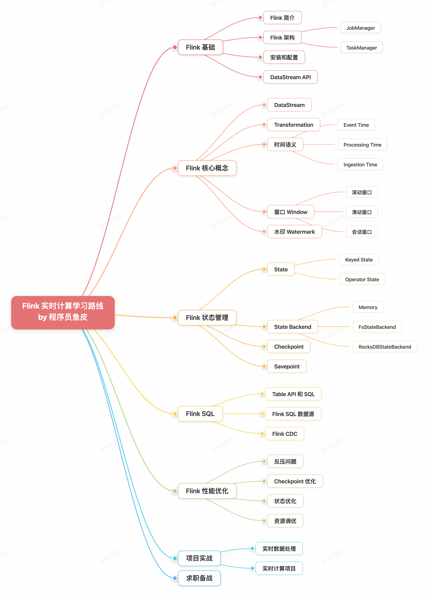

Flink 实时计算学习路线
Apache Flink 分布式流处理框架学习路径：从零基础到实时计算工程师。

概述
Apache Flink 是分布式流处理框架，专注于实时数据流处理。Flink 采用纯流式架构，将批处理视为流处理的特例，延迟低至毫秒级，被阿里、腾讯、字节跳动广泛使用。
核心特点： 高吞吐量、低延迟、有状态计算。
学习前提
- Java/Scala/Python 编程（Flink 主要使用 Java）
- 大数据基础：理解分布式计算、流式处理
- SQL 基础
就业方向
| 岗位 | 说明 |
|---|---|
| 实时计算工程师 | 使用 Flink 开发实时计算应用 |
| 大数据开发工程师 | 使用 Flink 处理流数据 |
| 流式数据工程师 | 开发流式数据处理系统 |
| Flink 架构师 | 设计 Flink 流式计算架构 |
整体学习建议
- 先理解大数据和流式计算基本概念，再学习 Flink
- Flink 主要用 Java 和 Scala 开发，建议使用 Java 学习
- 边学边写代码 — 事件时间、水位线、窗口等概念需要实践理解
- 重点学习低延迟作业设计和优化
阶段 1：Flink 基础（10-20 天）
知识点
Flink 基础概念【必学】：
- Flink 的特点和优势
- 流处理和批处理
- Flink 架构（JobManager、TaskManager）
- Flink 和 Spark 的对比
DataStream API【必学】：
- Source、Transformation、Sink
- map、filter、flatMap
- keyBy、reduce、aggregate
时间和水位线【必学】：
- 事件时间（Event Time）
- 处理时间（Processing Time）
- 水位线（Watermark）
学习资源
阶段 2：Flink SQL（15-25 天）
Flink SQL 是 Flink 重要发展方向，可用 SQL 开发流式应用，降低实时计算门槛。
知识点
Flink SQL 基础【必学】： Table API、Flink SQL 语法、流表转换、时间属性
Flink SQL 高级【必学】： 窗口（Tumbling/Sliding/Session）、JOIN（Regular/Interval/Temporal）、UDF
实战【必学】： Connector（Kafka、MySQL、Hive）、实时数据分析、实时数仓
Flink 2.1 引入
ML_PREDICT函数，可在 Flink SQL 中调用机器学习模型实现实时 AI 推理。
阶段 3：状态和容错（10-20 天）
知识点
状态管理【必学】：
- Keyed State 和 Operator State
- State Backend（Memory、FS、RocksDB）
- 状态 TTL
Checkpoint【必学】：
- Checkpoint 原理
- Savepoint
- 状态恢复
学习资源
阶段 4：项目实战（20-40 天）
项目推荐
- 实时日志分析
- 实时大屏监控
- 实时数据仓库
- 实时推荐系统
优质开源项目：
- Real-time Data Pipeline with Kafka, Flink — 整合 Kafka、Flink、Iceberg
- Flink CDC — 5.9k+ stars，流式数据集成工具
- Stream Processing with Flink
阶段 5：求职备战（面试前 15 天）
经典面试题
Flink 基础： Flink 架构、与 Spark Streaming 区别、JobManager/TaskManager 作用
时间和水位线： 事件时间 vs 处理时间、Watermark 作用、乱序数据处理
窗口： Tumbling/Sliding/Session Window、触发时机
状态和容错： 状态类型、Checkpoint 原理、State Backend 对比
Flink SQL： 与 Spark SQL 区别、时间属性定义、JOIN 类型
面试题库
来源：鱼皮·编程导航 / codefather